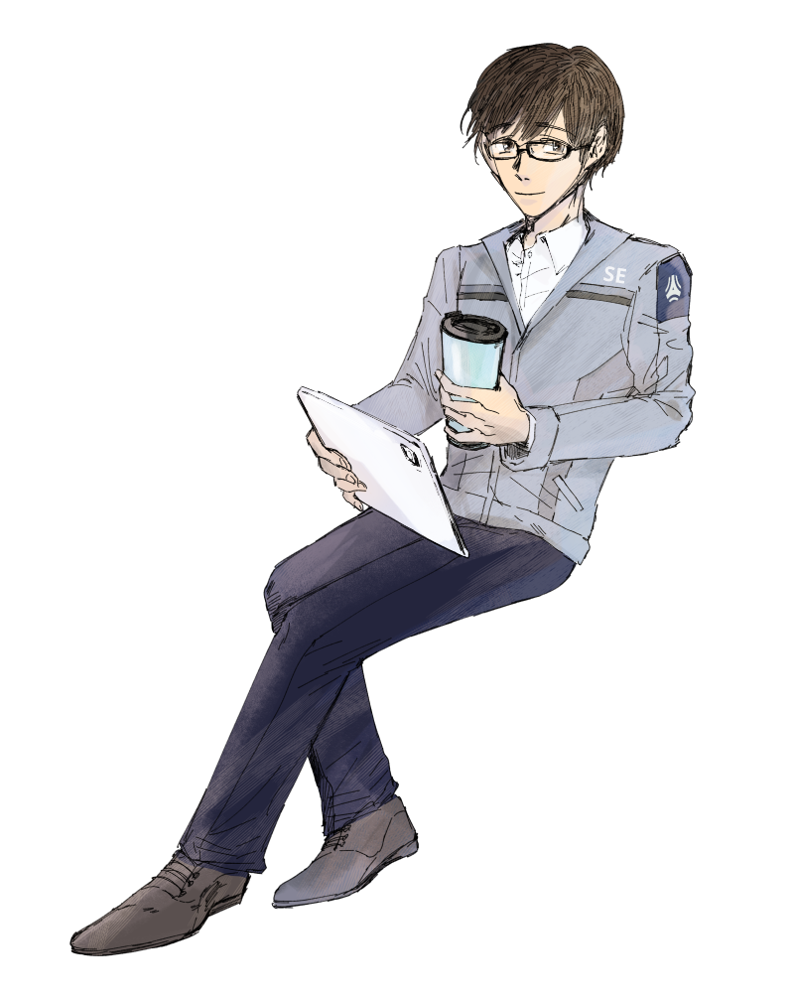

"무슨 일이 있든, 뒤를 지키고 있을게요.
그게 제 일이니까요."

| 이름 | 한성운 |
|---|---|
| 나이 | 37세 |
| 성격 | [차분한, 온화한, 이성적인, 책임감 있는] 매사에 미소를 지으며 모두에게 친절하고 예의가 바르다. 어떤 상황에서든 침착하고 차분하게 주변을 주시하며 그가 다른 데에 정신을 파는 일은 없다. 당황을 한다든지, 화를 내는 것을 본 사람은 거의 없을 정도로 감정이 동요하는 모습을 보이지 않는다. 맡은 일은 항상 성실하게 해내는 모범생 타입. 대부분의 사람들에게 호의적이긴 하지만 정작 일정 선은 넘지 않는다. |
| 기타 |
고동색 머리와 눈, 두껍지 않은 검은 테 안경. 깔끔하고 준수한 생김새를 가지고 있다. 눈썹과 눈꼬리가 모두 쳐진 모양새라 전체적으로 온화하고 부드러운 인상. 키 181cm, 표준 몸무게 |
|
▶ 물, 커피, 우유 등 모든 액상 음료를 좋아한다. 항상 텀블러를 손에 붙인것 마냥 가지고 다닌다. 술도 좋아하고 잘 마신다. 집안 대대로 말술. ▶ 생물학 전공 박사. 전공 분야 뿐만이 아니라 다른 과학 분야도 좋아한다. 틈틈이 궁금한 점이 생기면 관련 논문을 찾아서 읽는다. ▶ 한국어, 영어, 독일어 가능 |
|
| 부서 | 분석팀 |
| 오너 | 우엉 |
관계
| 한 강 |
동갑내기 고종사촌. 명절에도 자주 보았는데 같은 학교까지 다니게 되어서 더 자주 보았다. 얘기도 잘 통하고 친척들 중에서는 제일 편하고 친근하다. 가끔 지나칠 정도로 활발한거 같지만... |
|---|---|
| 알렉산드라 로마노바 |
술친구. 연구소 소속을 옮기면서 친해진 이후로 종종 퇴근하면 같이 술을 마시는 사이. |
| 꼼발왱2호 |
얼떨결애아빠. 주변에서 파파라고 불러서 아빠가 된 사이. 이제 파파라고 부르는게 익숙해졌다. |
| 데이브 루크스 |
취미 영업을 하는 관계. 같이 있으면 즐겁고 유쾌한 동료. 각종 음료와 논문, 이론서를 추천하고 있다. |